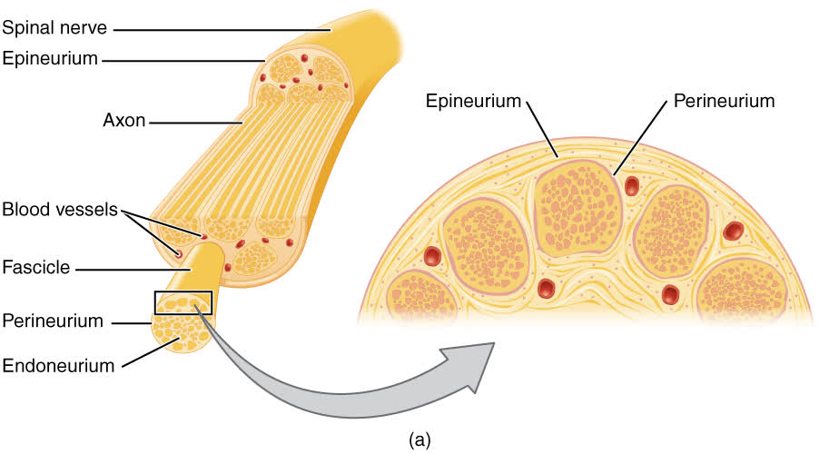

DX.4 — Polyneuropathie alcoolique
1. Définition
La Revue médicale suisse définit la neuropathie alcoolique comme l'atteinte nerveuse d'une consommation à risque, qui dépasse 30 grammes par jourBernard-Valnet 2019. La même revue rappelle le repère de l'Organisation mondiale de la santé, qui est de 3 verres par jour chez l'homme et de 2 verres chez la femmeBernard-Valnet 2019. L'atteinte est due soit à une toxicité directe de l'alcool, soit à une carence vitaminique, notamment en vitamine B1 (thiamine), et les deux mécanismes peuvent coexisterBernard-Valnet 2019.
Une autre revue suisse décrit cette polyneuropathie comme axonale, sensitive, ou à prédominance motrice quand le déficit en thiamine est présentSossauer 2018. Elle concerne 45 % des patients alcooliques dans ce texte, car l'alcool a une toxicité directe sur les fibres nerveuses périphériquesSossauer 2018. Une forme aiguë existe et peut mimer un syndrome de Guillain-Barré, ce qui interdit de conclure trop vite à la forme chroniqueSossauer 2018.
La revue européenne de Julian décrit une neuropathie progressive, surtout sensitive, axonale et dépendante de la longueurJulian 2018. Cette définition ne se confond pas avec la seule carence en thiamine, car la revue montre que les deux tableaux cliniques sont distinctsJulian 2018.
2. Épidémiologie (Suisse, puis Europe)
Le chiffre suisse le plus direct est de 45 % des patients alcooliques, et il vient d'une revue genevoise publiée en 2018Sossauer 2018. Dans la population générale de cette même revue, 20,5 % ont une consommation épisodique à risque au moins une fois par moisSossauer 2018. La consommation chronique à risque y concerne 4,2 % des personnes, avec un verre standard qui vaut 10 à 12 grammes d'alcool purSossauer 2018.
Le seuil épisodique est de 4 verres ou plus pour les femmes et de 5 verres pour les hommes, en une occasionSossauer 2018. Le seuil chronique est d'au moins 1 verre par jour chez la femme et d'au moins 2 verres chez l'homme, en moyenne quotidienneSossauer 2018. Ces seuils de population ne sont pas le seuil de 30 grammes de la revue de neurologie interne, et les deux textes doivent rester distinctsBernard-Valnet 2019.
Julian décrit 17 études de conduction nerveuse et trouve une prévalence de 46,3 % , avec un intervalle de 35,7 à 57,3 % sur 1596 personnesJulian 2018. Sur l'examen clinique seul, la prévalence regroupée est de 44,2 % , avec un intervalle de 35,9 à 53 % sur 2590 personnesJulian 2018. En Norvège, dans le Vest-Agder, la prévalence populationnelle est de 12,2 pour 100,000 et cette cause représente 10 % de 192 polyneuropathiesJulian 2018.
Suisse, puis Europe : ne pas additionner
| Mesure | Valeur lue | Source |
|---|---|---|
| Part des patients alcooliques qui ont une polyneuropathieSossauer 2018 | 45 %Sossauer 2018 | Revue médicale suisse, 2018Sossauer 2018 |
| Consommation épisodique à risque, population suisseSossauer 2018 | 20,5 %Sossauer 2018 | Même revue, 2018Sossauer 2018 |
| Consommation chronique à risqueSossauer 2018 | 4,2 %Sossauer 2018 | Revue médicale suisse, 2018Sossauer 2018 |
| Prévalence confirmée par la conduction nerveuseJulian 2018 | 46,3 % (35,7 à 57,3), n = 1596Julian 2018 | Journal of Neurology, 2018Julian 2018 |
| Prévalence clinique regroupéeJulian 2018 | 44,2 % (35,9 à 53), n = 2590Julian 2018 | Journal of Neurology, 2018Julian 2018 |
| Prévalence en population norvégienneJulian 2018 | 12,2 pour 100,000, soit 10 % de 192 diagnosticsJulian 2018 | Journal of Neurology, 2018Julian 2018 |
| Fourchette citée par la revue allemandeSommer 2018 | 22 % à 66 %Sommer 2018 | Deutsches Ärzteblatt, 2018Sommer 2018 |
La revue allemande de Sommer ajoute qu'une quantité supérieure à 100 grammes par jour, pendant des années, est tenue pour pathogèneSommer 2018. Ce seuil de 100 grammes n'annule pas le seuil suisse de 30 grammes, car les deux textes ne mesurent pas la même choseSommer 2018. Chez 242 buveurs, Wetterling montre 29,6 % et 29,9 % de neuropathie chez les buveurs continus ou fréquents, contre 11,3 % chez les buveurs épisodiquesJulian 2018.
3. Physiopathologie
La revue suisse de 2019 retient deux voies, qui sont la toxicité directe et la carence en vitamine B1, souvent avec un déficit cérébelleux associéBernard-Valnet 2019. La toxicité directe donne une atteinte sensitive sévère, et la douleur est souvent au premier planBernard-Valnet 2019. La revue de 2018 précise que la forme liée à la thiamine est plutôt motrice, alors que la toxicité directe reste sensitiveSossauer 2018.
Julian rapporte que la neuropathie alcoolique sans carence en thiamine est lentement progressive et à dominante sensitiveJulian 2018. La carence en thiamine, elle, est aiguë dans 56 % des cas en moins de 1 mois, et elle est d'abord motrice, avec une perte de la marcheJulian 2018. Les deux tableaux sont donc distincts sur la biopsie et sur la clinique, et les superposer efface le signe qui oriente le traitementJulian 2018.
La revue allemande décrit une combinaison de malnutrition, de toxicité directe et de stress oxydatif, qui frappe surtout les fibres finesSommer 2018. Cette atteinte des fibres fines explique la douleur, et la neurographie montre ensuite une neuropathie axonale sensitivomotriceSommer 2018. Le schéma du nerf montre où ces fibres sont groupées, car l'axone est dans le faisceau, lui-même dans l'épinèvreJulian 2018.
Base anatomo-fonctionnelle du nerf

Le schéma montre le nerf spinal, l'épinèvre qui l'entoure, puis les faisceaux que le périnèvre limiteJulian 2018. Chaque axone est dans l'endonèvre, et c'est cette fibre longue que la toxicité distale atteint en premier au piedBernard-Valnet 2019. Les vaisseaux du périnèvre rappellent que la fibre dépend aussi de son apport, ce qui relie la carence vitaminique au même axoneSossauer 2018. Le dessin est un nerf sain, donc il ne montre pas la perte axonale, et seule la clinique ou la conduction la démontreJulian 2018.
Ce que l'image décide est le niveau du raisonnement, qui va de l'axone distal vers le faisceau, et non l'inverseBernard-Valnet 2019. Elle ne décide pas de la dose de thiamine, car la carence se prouve par le contexte et par le tableau moteur aiguJulian 2018.
Deux cascades, sensitive et motrice
- La toxicité directe s'installe avec la dose cumulée d'alcool, et elle donne des douleurs distales avant la faiblesseBernard-Valnet 2019.
- La carence en thiamine peut s'ajouter, et elle accélère un tableau moteur qui, dans 56 % des cas, tient en moins de 1 moisJulian 2018.
- Les fibres fines souffrent tôt, ce qui explique les brûlures, puis les grosses fibres tombent et le réflexe achilléen disparaîtSommer 2018.
- Si l'abstinence est tenue et que l'alimentation redevient normale, la force peut revenir en semaines ou en mois, parfois jusqu'à 2 ansJulian 2018.
Hawley a suivi 11 patients abstinents, et la sensibilité s'améliore en quelques jours, tandis qu'une perte vibratoire légère peut resterJulian 2018. La récupération n'est donc pas une promesse de nerf neuf, et le patient doit l'entendre avant de juger l'abstinence inutileJulian 2018.
4. Démarche diagnostique
On écarte d'abord la forme aiguë qui mime un Guillain-Barré, car elle peut monter vite et elle n'est pas la polyneuropathie chronique de longueurSossauer 2018. On écarte ensuite l'encéphalopathie de Gayet-Wernicke, car le même patient carencé peut avoir les deux, et le glucose donné avant la thiamine peut la précipiterSossauer 2018. La triade lue est un trouble oculomoteur dans 29 % des cas, un syndrome cérébelleux dans 23 % des cas, et une confusion dans 82 % des casSossauer 2018.
Seuls 13 % des patients alcoolodépendants font ce syndrome, alors que le déficit en thiamine est présent chez 80 % d'entre euxSossauer 2018. Cette discordance montre qu'une carence biologique ne suffit pas à diagnostiquer l'encéphalopathie, et qu'il faut la triade ou son équivalentSossauer 2018. Quand ces urgences sont écartées, la forme fréquente est la neuropathie distale douloureuse du buveur chronique, sensitive et en chaussettesBernard-Valnet 2019.
Le piège est d'arrêter le bilan parce que l'alcool est évident, car la revue demande un bilan de base même lorsqu'une cause semble claireBernard-Valnet 2019. Elle illustre ce principe chez le diabétique, où une autre étiologie est présente dans 53 % des cas, et ce pourcentage n'est pas celui de l'alcoolBernard-Valnet 2019. Une atteinte asymétrique, motrice pure, ou non dépendante de la longueur, doit faire chercher une autre maladie et adresser au neurologueBernard-Valnet 2019.
Urgent, puis fréquent
| Concurrent | Ce qui tranche | Piège | Conduite |
|---|---|---|---|
| Forme aiguë pseudo-Guillain-BarréSossauer 2018 | Montée rapide, et non une évolution en annéesSossauer 2018 | La prendre pour une polynévrite chroniqueSossauer 2018 | Filière urgente, car ce n'est plus le cadre ambulatoireSossauer 2018 |
| Gayet-WernickeSossauer 2018 | Oculomotricité, cervelet ou confusionSossauer 2018 | Donner du glucose avant la thiamineSossauer 2018 | Thiamine d'abord, car le glucose peut précipiter le syndromeSossauer 2018 |
| Neuropathie sensitive douloureuseBernard-Valnet 2019 | Chaussettes, douleur, consommation à risqueBernard-Valnet 2019 | Oublier la carence associéeBernard-Valnet 2019 | Abstinence et vitamine, tôtBernard-Valnet 2019 |
| Atteinte qui n'est pas de longueurBernard-Valnet 2019 | Asymétrie, moteur pur, ou dysautonomie isoléeBernard-Valnet 2019 | Tout mettre sur l'alcoolBernard-Valnet 2019 | Avis neurologique, et bilan élargiBernard-Valnet 2019 |
5. Anamnèse ciblée et drapeaux rouges
On quantifie l'alcool en grammes et en années, car la dose cumulée est le facteur de risque principal que Julian retientJulian 2018. On demande si la consommation est quotidienne ou épisodique, car les buveurs continus ont plus de neuropathie que les buveurs épisodiquesJulian 2018. On demande l'alimentation, les vomissements et la perte de poids, car la carence en thiamine s'ajoute surtout dans ce contexteBernard-Valnet 2019.
On fait décrire la douleur, qui est une brûlure, une décharge ou un picotement distal, car ce sont les signes sensitifs positifs de la revueBernard-Valnet 2019. On demande depuis quand les pieds sont atteints et si les mains suivent, car la longueur du nerf explique cet ordreSommer 2018. On cherche un trouble de marche qui dépasse le pied, car un déficit cérébelleux est souvent associé et il change l'examenBernard-Valnet 2019.
Drapeaux et l'acte qu'ils imposent
| Drapeau | Pourquoi | Action |
|---|---|---|
| Confusion, trouble oculomoteur ou ataxie cérébelleuseSossauer 2018 | Triade possible de Gayet-Wernicke, même incomplèteSossauer 2018 | Thiamine avant tout glucoseSossauer 2018 |
| Faiblesse qui s'installe en moins de 1 moisJulian 2018 | Profil de la carence en thiamine, moteurJulian 2018 | Supplémentation forte et recherche de l'encéphalopathieVitamine B1 |
| Paralysie qui monte en joursSossauer 2018 | Forme aiguë qui peut mimer un Guillain-BarréSossauer 2018 | Ne pas laisser le patient en ambulatoireSossauer 2018 |
| Hypotension orthostatique ou atteinte non longueur-dépendanteBernard-Valnet 2019 | La revue en fait un motif d'adressage spécialiséBernard-Valnet 2019 | Avis neurologique, bilan élargiBernard-Valnet 2019 |
| Douleur nouvelle sous abstinence récenteJulian 2018 | La récupération sensitive peut commencer en jours, mais une aggravation motrice n'est pas une récupérationJulian 2018 | Revoir la force et la thiamine, ne pas rassurer sur la seule douleurJulian 2018 |
6. Examen physique ciblé, région par région
On examine d'abord les orteils, puis les pieds, teste les réflexes, puis les mains, la marche et le cervelet, car la longueur commande cet ordreBernard-Valnet 2019. On compare les deux pieds, car une asymétrie nette n'est plus la polyneuropathie alcoolique simple et elle doit alerterBernard-Valnet 2019.
On ouvre les orteils, les pieds, les réflexes, les mains et la marche.
Orteils : vibration
La pallesthésie est le test des grosses fibres, et la revue décrit les normes du diapason de Rydel-Seiffer au doigt et à l'orteilBernard-Valnet 2019. Entre 20 et 39 ans, la limite inférieure est de 6,9 au doigt et de 5,5 à l'orteilBernard-Valnet 2019. Entre 40 et 60 ans, cette limite est de 6,2 au doigt et de 4,7 à l'orteilBernard-Valnet 2019. Un chiffre sous cette limite est pathologique pour l'âge, et il ne se compare pas à la norme d'un adulte jeuneBernard-Valnet 2019.
Pieds : tact, douleur, température
Le tact fin, la piqûre et la température testent des calibres différents, et la revue les sépare en sens épicritique et protopathiqueBernard-Valnet 2019. L'épicritique est porté par les grosses fibres puis les cordons postérieurs, et le protopathique par les fibres fines puis le spinothalamiqueBernard-Valnet 2019. La douleur en chaussette, brûlure ou décharge, signe plutôt la fibre fine, qui est celle que la toxicité directe frappe tôtSommer 2018. Une anesthésie qui s'arrête net à la malléole sans gradient est suspecte, car la neuropathie de longueur s'estompe vers le hautBernard-Valnet 2019.
Réflexes achilléen et rotulien
On cherche le réflexe achilléen avant le rotulien, car la fibre la plus longue est celle du molletBernard-Valnet 2019. Sa disparition soutient l'atteinte des grosses fibres, et elle peut persister comme séquelle même après une abstinence utileJulian 2018. Un réflexe vif, avec un signe de Babinski, n'est plus cette neuropathie périphérique, et il faut chercher la moelle ou le cerveauBernard-Valnet 2019. La revue demande aussi les réflexes rotuliens, qui tombent plus tard, quand l'atteinte a remontéBernard-Valnet 2019.
Mains, tardives
Les mains s'examinent après les pieds, car l'atteinte de longueur les touche quand les pieds sont déjà prisSommer 2018. Des crampes et des fasciculations sont des signes moteurs positifs, et la faiblesse des releveurs du pied est le déficit moteur typiqueBernard-Valnet 2019. Une main tombante isolée, sans pied atteint, n'entre pas dans cette définition, et elle oriente vers un nerf ou une racineBernard-Valnet 2019. L'amyotrophie des intrinsèques se note, car elle marque une perte axonale déjà installée et non une simple douleurSommer 2018.
Marche, cervelet, pression artérielle
On fait marcher le patient pieds nus, car le déficit des releveurs et le trouble de l'équilibre se voient mieux ainsiBernard-Valnet 2019. Un élargissement du polygone et une dysmétrie orientent vers le cervelet, que la revue associe souvent à la neuropathie alcooliqueBernard-Valnet 2019. On mesure la pression couchée puis debout, car une hypotension orthostatique est un drapeau qui justifie l'avis spécialiséBernard-Valnet 2019. Cette mesure ne remplace pas la recherche oculomotrice, qui appartient au dépistage du Gayet-WernickeSossauer 2018.
7. Approche syndromique
Quatre syndromes se séparent, car ils n'ont ni le même délai ni le même premier geste, et les mélanger retarde la thiamine ou l'hospitalisationSossauer 2018.
On ouvre le syndrome douloureux, le syndrome moteur carentiel, le syndrome autonome et la forme aiguë.
7.1 Sensitive douloureuse
Le patient décrit des brûlures des pieds, des décharges ou des picotements, et la force est encore utile à la première consultationBernard-Valnet 2019. Le mécanisme est la toxicité directe, qui frappe les fibres fines, et la revue allemande le relie à la douleurSommer 2018. L'examen montre une hypoesthésie en chaussette et, plus tard, une chute du réflexe achilléenBernard-Valnet 2019. Ce syndrome se traite par l'abstinence et par la vitamine, tôt, car la revue dit que la récupération est meilleure quand la prise en charge est précoceBernard-Valnet 2019.
7.2 Motrice et carentielle
La faiblesse domine, elle s'installe en moins de 1 mois dans 56 % des carences en thiamine décrites par Julian, et la marche se perdJulian 2018. La douleur peut être au second plan, ce qui distingue ce tableau de la toxicité directe sensitiveJulian 2018. Le geste premier est la thiamine, y compris par voie parentérale au début des formes graves, comme l'information professionnelle le recommande sans en fixer ici le milligramme injectableVitamine B1. On cherche en même temps l'encéphalopathie, car la carence qui casse le nerf peut aussi casser le tronc cérébralSossauer 2018.
7.3 Avec atteinte autonome
La revue de 2018 dit qu'une atteinte autonome peut s'associer à la polyneuropathie axonaleSossauer 2018. L'hypotension orthostatique, les troubles digestifs ou une sudation anormale en sont les signes fonctionnelsBernard-Valnet 2019. La revue de 2019 en fait un motif d'adressage, car ce n'est plus la forme distale simple du premier recoursBernard-Valnet 2019. On ne conclut pas à une simple déshydratation si la pression chute au lever et que les pieds sont déjà insensiblesBernard-Valnet 2019.
7.4 Forme aiguë
La paralysie s'installe en jours et peut monter, et la revue de 2018 dit que cette forme peut mimer un syndrome de Guillain-BarréSossauer 2018. Le réflexe est aboli, la force chute, et le contexte d'alcool ne suffit pas à rassurerSossauer 2018. Le patient relève d'une filière hospitalière, car le risque n'est plus celui d'une douleur chronique des piedsSossauer 2018. La thiamine reste indiquée, mais elle ne remplace pas la surveillance respiratoire que cette montée imposeSossauer 2018.
8. Diagnostic positif et critères
Le diagnostic positif réunit une consommation à risque, un tableau distal dépendant de la longueur, et l'absence d'un drapeau qui imposerait une autre filièreBernard-Valnet 2019. La revue européenne ajoute le caractère axonal, progressif et surtout sensitif quand la thiamine n'est pas le moteur du tableauJulian 2018. Aucun de ces éléments ne suffit seul, car boire sans signe nerveux n'est pas une neuropathie, et un pied insensible sans alcool a d'autres causesBernard-Valnet 2019.
L'électroneuromyogramme (ENMG) n'est pas exigé quand la cause est claire et le tableau typique, car la revue le réserve aux formes atypiquesBernard-Valnet 2019. Un bilan sanguin de base reste utile même si l'alcool est évident, et la revue le dit explicitementBernard-Valnet 2019. Le questionnaire DN4 (Douleur neuropathique en quatre questions) est utilisé pour suivre la douleur, et la revue ne donne pas ici de seuil chiffré à recopierBernard-Valnet 2019.
Suffisant et insuffisant
| Élément | Suffit-il | Conséquence |
|---|---|---|
| Consommation supérieure à 30 grammes par jourBernard-Valnet 2019 | Non, car il faut le signe nerveuxBernard-Valnet 2019 | Chercher les pieds et les réflexesBernard-Valnet 2019 |
| Douleur en chaussetteBernard-Valnet 2019 | Elle oriente, elle ne prouve pas l'alcoolBernard-Valnet 2019 | Quantifier la boisson et écarter le drapeau aiguBernard-Valnet 2019 |
| Conduction axonaleJulian 2018 | Elle confirme le mécanisme, elle n'est pas le premier geste si le tableau est typiqueBernard-Valnet 2019 | La demander si l'asymétrie ou la vitesse surprennentBernard-Valnet 2019 |
| Triade de Gayet-WernickeSossauer 2018 | Elle change de diagnostic et passe avant la neuropathie chroniqueSossauer 2018 | Thiamine immédiate, avant le glucoseSossauer 2018 |
9. Examens complémentaires
Il n'y a pas d'image de référence, car le diagnostic de la forme typique est clinique, et la revue le dit en réservant la conduction aux atypiesBernard-Valnet 2019. Le bilan de première intention cherche le diabète, la vitamine B12 (cobalamine) et une gammapathie, même quand l'alcool est au premier planBernard-Valnet 2019. Les recommandations françaises citées par la revue ajoutent la numération, la protéine C réactive (CRP), les tests hépatiques, la créatinine et la thyréostimuline (TSH)Bernard-Valnet 2019.
Chez le patient dénutri ou alcoolique, la revue permet de doser les vitamines B6 (pyridoxine) et B9 (folates), car la carence ne se devine pas toujours sur l'alcool seulBernard-Valnet 2019. La conduction nerveuse, quand elle est demandée, montre une axonopathie sensitive ou sensitivomotrice, et non un bloc de conductionSommer 2018. Une vitesse très ralentie ou un bloc doivent faire revoir le diagnostic, car ce n'est pas le profil que la revue allemande décritSommer 2018.
Lecture du bilan
| Résultat | Signification | Conduite |
|---|---|---|
| Glycémie ou hémoglobine glyquée élevéeBernard-Valnet 2019 | Le diabète peut coexister et il a sa propre neuropathieBernard-Valnet 2019 | Traiter les deux causes, ne pas choisirBernard-Valnet 2019 |
| Vitamine B12 basse, ou homocystéine et acide méthylmalonique élevés si la B12 est limiteBernard-Valnet 2019 | Carence qui donne aussi une atteinte cordonaleBernard-Valnet 2019 | Ne pas tout attribuer à l'alcoolBernard-Valnet 2019 |
| Pic monoclonalBernard-Valnet 2019 | Gammapathie possible, y compris une forme anti-MAG si l'ataxie domineBernard-Valnet 2019 | Avis spécialisé, car le traitement est celui de l'hémopathieBernard-Valnet 2019 |
| Tests hépatiques perturbésBernard-Valnet 2019 | Ils témoignent d'une exposition, ils ne mesurent pas le nerfBernard-Valnet 2019 | Ils renforcent l'anamnèse, ils ne la remplacent pasBernard-Valnet 2019 |
| Thiamine basse dans un tableau moteur rapideJulian 2018 | Profil carentiel plutôt que toxicité sensitive pureJulian 2018 | Supplémentation selon l'information professionnelleVitamine B1 |
La revue rappelle qu'une valeur limite de vitamine B12 se confirme par l'homocystéine et l'acide méthylmalonique, et ce n'est pas un dosage de thiamineBernard-Valnet 2019. On n'attend pas ce résultat pour donner la thiamine si la triade ou le tableau moteur aigu est déjà làSossauer 2018.
Quand demander la conduction
On la demande si le tableau n'est pas de longueur, s'il est asymétrique, ou si aucune cause n'est claireBernard-Valnet 2019. On peut s'en passer si les pieds, l'alcool quantifié et le bilan de base concordent, car la revue limite cet examen aux atypiesBernard-Valnet 2019. Le résultat attendu est axonal, et un profil démyélinisant doit rouvrir la liste, y compris la forme aiguëSommer 2018. Julian a besoin de cette conduction pour son chiffre de 46,3 %, ce qui ne veut pas dire que chaque patient du cabinet doit l'avoirJulian 2018.
10. Arbre décisionnel
- Si la faiblesse monte en jours ou que la respiration se fatigue, alors ce n'est pas la forme chronique, et l'hospitalisation s'imposeSossauer 2018.
- Si l'oculomotricité, le cervelet ou la confusion apparaissent, alors la thiamine passe avant le glucose, car le glucose peut précipiter le syndromeSossauer 2018.
- Si la faiblesse distale s'installe en moins de 1 mois, alors on traite une carence en thiamine et l'on cherche l'encéphalopathieJulian 2018.
- Si la douleur est en chaussette, chronique, et que l'alcool dépasse le seuil lu, alors l'abstinence et la vitamine sont le traitement de fondBernard-Valnet 2019.
- Si la douleur neuropathique persiste malgré cela, alors la prégabaline peut être discutée à la dose de son information professionnelleLyrica.
- Si l'atteinte est asymétrique ou non dépendante de la longueur, alors on sort de cet arbre et l'on adresseBernard-Valnet 2019.
Chaque branche dit pourquoi elle existe, car la forme aiguë tue autrement que la douleur chronique, et le glucose mal ordonné aggrave la carenceSossauer 2018. L'arbre ne donne pas de milligramme qui ne soit pas dans l'information professionnelle de la molécule choisieVitamine B1.
11. Prise en charge selon les recommandations suisses
11.A But
Le but est l'arrêt de la toxicité et la correction de la carence, car la revue dit que l'abstinence et la vitamine améliorent surtout si l'on agit tôtBernard-Valnet 2019. Le but sur la douleur est de la rendre supportable, sans promettre la disparition du déficit vibratoire, qui peut rester après abstinenceJulian 2018. Chez les 11 patients de Hawley, la sensibilité peut bouger en quelques jours et la force en semaines ou en mois, jusqu'à 2 ans dans les cas sévèresJulian 2018.
11.B Moyens
L'abstinence est le moyen principal, et la revue de 2018 vise au minimum une réduction si l'arrêt complet n'est pas obtenu d'embléeSossauer 2018. L'alimentation redevient équilibrée, car la malnutrition fait partie du mécanisme que Julian discute, même si elle n'explique pas tous les casJulian 2018. La thiamine se prescrit selon l'information professionnelle de la vitamine B1, et non selon une dose recopiée d'un article qui n'est pas une autorisationVitamine B1. La prégabaline est le palier de la douleur neuropathique, car son information professionnelle l'indique dans les douleurs neuropathiques périphériques de l'adulteLyrica.
Les fiches sont celles de la vitamine B1 et de la prégabaline.
Vitamine B1 Streuli, thiamine
Vitamine B1 Streuli, thiamine, autorisation 34078, mise à jour d'août 2026, est indiquée dans le béribéri, dont les polynévrites périphériques, et dans l'encéphalopathie de WernickeVitamine B1. Pour un déficit léger ou modéré, l'adulte et l'adolescent de 12 ans et plus reçoivent 150 mg tous les deux jours ou chaque jourVitamine B1. Pour un déficit sévère, on débute à 300 mg par jour, puis on poursuit à 150 mg par jour, et le comprimé s'avale sans être croquéVitamine B1. Dans les cas graves, l'information professionnelle recommande une induction parentérale, puis la voie orale, et elle ne donne pas dans cette fiche le milligramme de l'ampouleVitamine B1.
| Rubrique | Texte de l'information professionnelle |
|---|---|
| Grossesse | Dans ces circonstances, la prudence est de mise lors de l'utilisation de Vitamine B1 Streuli à des doses supérieures à l'apport journalier recommandé pendant la grossesse. L'apport journalier recommandé de la thiamine est de 1,5 à 1,6 mg pour les femmes enceintes et allaitantesVitamine B1. |
| Allaitement | Pendant la grossesse et l'allaitement, le besoin en vitamine B1 est accentué. Néanmoins, l'alimentation en apporte généralement suffisamment. |
| Contre-indications | Hypersensibilité connue à l'un des composants mentionnés dans la composition. |
Prégabaline, douleur neuropathique
La prégabaline, autorisation 57057, mise à jour de juillet 2026, est indiquée chez l'adulte pour les douleurs neuropathiques périphériques et centralesLyrica. On débute à 150 mg par jour, que l'on peut fractionner en 75 mg deux fois ou en 50 mg trois fois, pendant ou en dehors des repasLyrica. Si la réponse et la tolérance le permettent, 300 mg par jour deviennent possibles après 3 à 7 jours, et 600 mg par jour après 7 jours encoreLyrica. Les essais cités par le texte portent sur la neuropathie diabétique, le zona et la lésion médullaire, donc l'extension à la neuropathie alcoolique suit l'indication générale et non un essai dédiéLyrica.
| Rubrique | Texte de l'information professionnelle |
|---|---|
| Grossesse | On ne dispose que de données limitées sur l'administration de la prégabaline chez la femme enceinte. |
| Allaitement | La sécurité d'emploi de la prégabaline chez les nourrissons est inconnue, il est donc recommandé de ne pas allaiter pendant le traitement. |
| Contre-indications | Hypersensibilité au principe actif ou à l'un des excipients. Les patients qui ont une intolérance au galactose, un déficit total en lactase ou une malabsorption du glucose-galactose ne doivent pas prendre ce médicament. |
Urgence vitaminique, ordre des minutes
- Dès que la triade est suspectée, la thiamine est donnée avant le glucose, car le métabolisme du sucre consomme les dernières réservesSossauer 2018.
- Dans le même temps, on hospitalise si la vigilance chute ou si la faiblesse monte, car la forme aiguë peut mimer un Guillain-BarréSossauer 2018.
- Le relais oral suit l'information professionnelle, à 300 mg par jour au début du déficit sévère, puis 150 mg par jourVitamine B1.
- On ne recopie pas une dose injectable lue dans un article de mortalité, car cette fiche orale ne la porte pasVitamine B1.
Malgré un traitement par thiamine, la mortalité du Gayet-Wernicke reste de 17 à 20 % dans l'étude citée, et la récupération complète n'est que de 16 %Sossauer 2018. Parmi ceux qui survivent, 80 % évoluent vers un syndrome de Korsakoff, ce qui justifie de ne pas attendre la triade complète pour traiterSossauer 2018.
La douleur qui reste après l'abstinence se traite comme une douleur neuropathique, et les opioïdes viennent en dernier recours selon la revue, avec un spécialisteBernard-Valnet 2019. La capsaïcine est citée en deuxième ligne par la même revue, et aucune dose n'en est recopiée ici faute d'information professionnelle ouverte dans cette leçonBernard-Valnet 2019. La rééducation fait partie du traitement, car le déficit des releveurs et la douleur en dépendent, et la conduite automobile peut devenir impossibleBernard-Valnet 2019.
11.C Surveillance
On revoit la force des releveurs et la vibration à l'orteil dans les premières semaines, car c'est le délai où Hawley voit la force bougerJulian 2018. On revoit la douleur à chaque palier de prégabaline, car le passage de 150 mg à 300 mg se décide après 3 à 7 jours selon la toléranceLyrica. On surveille la consommation déclarée et les tests hépatiques, car ils témoignent de l'exposition qui entretient la toxicitéBernard-Valnet 2019. On arrête la montée de prégabaline si la somnolence ou le vertige empêchent la marche, car l'information professionnelle signale ces effetsLyrica. La revue lie le déficit sensitif au mal perforant du diabétique, et ce lien ne devient pas un chiffre de la neuropathie alcooliqueBernard-Valnet 2019.
11.D Pronostic
L'abstinence précoce est le facteur que la revue suisse associe à l'amélioration, sans donner un pourcentage universel de guérisonBernard-Valnet 2019. Julian, à partir de 11 patients abstinents, décrit une sensibilité qui bouge en jours et une force qui bouge en semaines, en mois, ou jusqu'à 2 ansJulian 2018. La perte vibratoire légère ou l'aréflexie achilléenne peuvent demeurer, donc la guérison clinique n'est pas l'examen normalJulian 2018. Sans abstinence, la dose cumulée continue d'aggraver le risque, et les buveurs continus restent plus atteints que les buveurs épisodiquesJulian 2018. Le Gayet-Wernicke a un pronostic à part, avec 17 à 20 % de mortalité dans la série citée et 80 % de passage au Korsakoff chez les survivantsSossauer 2018.
12. Prévention
La prévention primaire reprend les seuils épisodiques, qui sont 4 verres chez la femme et 5 chez l'hommeSossauer 2018. Le seuil chronique est d'au moins 1 verre par jour chez la femme et de 2 verres chez l'hommeSossauer 2018. Un verre standard y vaut 10 à 12 grammes, soit 3 décilitres de bière ou 1 décilitre de vin, et ce repère sert à l'entretienSossauer 2018. La prévention secondaire est la recherche de la neuropathie chez la personne déjà au-dessus de 30 grammes par jour, par le diapason et la question des brûluresBernard-Valnet 2019. La prévention tertiaire protège le pied insensible, maintient l'abstinence et poursuit la vitamine tant que le déficit sévère n'est pas relevéVitamine B1. Réduire sans arrêter limite déjà l'évolution selon la revue de 2018, et c'est un objectif acceptable si l'abstinence complète échoue au premier entretienSossauer 2018.
13. Points clés
La neuropathie alcoolique est axonale et souvent douloureuse, et elle touche 45 % des patients alcooliques dans la revue suisse de 2018Sossauer 2018.
Le seuil suisse de consommation à risque lu pour cette atteinte est supérieur à 30 grammes par jour, distinct du seuil allemand de 100 grammesBernard-Valnet 2019.
La thiamine passe avant le glucose dès qu'un Gayet-Wernicke est possible, car le sucre peut précipiter le syndromeSossauer 2018.
La forme qui monte en jours n'est pas la forme chronique, et elle peut mimer un syndrome de Guillain-BarréSossauer 2018.
L'abstinence précoce et la vitamine améliorent, mais la vibration et le réflexe peuvent rester anormaux, y compris après 2 ansJulian 2018.
14. Pièges et questions fréquentes à l'examen fédéral suisse
| Question | Réponse | Raison |
|---|---|---|
| Faut-il attendre le dosage de thiamine avant de traiter une confusion avec trouble oculomoteurSossauer 2018 | Non, la thiamine précède le glucose et le résultatSossauer 2018 | Le glucose peut précipiter le syndrome, et 80 % des alcoolodépendants sont déjà carencésSossauer 2018 |
| 30 grammes et 100 grammes sont-ils le même seuilBernard-Valnet 2019 | Non, 30 grammes viennent de la revue suisse et 100 grammes de la revue allemandeSommer 2018 | Les mélanger change la population que l'on dit à risqueBernard-Valnet 2019 |
| Quelle dose orale de thiamine pour un déficit sévère chez l'adulteVitamine B1 | 300 mg par jour au début, puis 150 mg par jourVitamine B1 | C'est le texte de l'information professionnelle, et la dose injectable n'y est pas chiffréeVitamine B1 |
| Peut-on donner 150 mg de prégabaline au premier jour d'une douleur neuropathiqueLyrica | Oui, c'est la dose initiale, en deux ou trois prisesLyrica | L'indication est la douleur neuropathique périphérique, et les essais cités ne sont pas alcooliquesLyrica |
| Un électroneuromyogramme est-il obligatoire si le tableau est typique et l'alcool quantifiéBernard-Valnet 2019 | Non, la revue le réserve aux formes atypiques ou sans cause claireBernard-Valnet 2019 | Le bilan sanguin de base, lui, reste indiqué même si la cause semble évidenteBernard-Valnet 2019 |
| 46,3 % est-il la prévalence en population généraleJulian 2018 | Non, c'est la prévalence chez les consommateurs chroniques confirmée par conduction, sur 1596 personnesJulian 2018 | En population norvégienne, le chiffre lu est 12,2 pour 100,000Julian 2018 |
| L'abstinence rend-elle l'examen normalJulian 2018 | Non, une perte vibratoire ou une aréflexie peuvent demeurerJulian 2018 | Sur 11 patients, la force s'améliore en semaines à mois, jusqu'à 2 ans, sans résolution complèteJulian 2018 |
| Le chiffre de 53 % s'applique-t-il à l'alcoolBernard-Valnet 2019 | Non, c'est la part des diabétiques qui ont une autre étiologieBernard-Valnet 2019 | Il sert seulement à justifier un bilan de base, y compris quand une cause paraît évidenteBernard-Valnet 2019 |
Exemple chiffré, sans mélanger les molécules
Un adulte carencé de façon sévère reçoit d'abord 300 mg de thiamine par jour, puis 150 mg par jour, et ces deux nombres viennent de la même information professionnelleVitamine B1. Ce n'est pas la dose de la prégabaline, qui débute aussi à 150 mg par jour mais pour la douleur, et qui peut monter à 300 mg puis à 600 mgLyrica. Quatre prises n'ont pas de sens ici, car la thiamine sévère est quotidienne au départ, puis quotidienne à 150 mg, et non répartie comme un antalgique horaireVitamine B1. Chez la femme enceinte, l'apport journalier recommandé est de 1,5 à 1,6 mg, et la prudence s'impose au-dessus, ce qui n'est pas la dose thérapeutique du déficit sévèreVitamine B1. On n'additionne pas 300 mg de thiamine et 300 mg de prégabaline dans une même phrase d'ordonnance, car les indications et les plafonds diffèrentLyrica.
Comment lire les pourcentages sans les additionner
Le taux de 45 % est la part des patients alcooliques dans la revue suisse de 2018, et ce n'est pas une prévalence en population généraleSossauer 2018. Le taux de 46,3 % est la prévalence chez des consommateurs chroniques lorsque la conduction confirme le diagnostic, sur 1596 personnesJulian 2018. Le taux de 44,2 % est la prévalence clinique regroupée, sur 2590 personnes, et l'intervalle va de 35,9 à 53 %Julian 2018. Le taux de 12,2 pour 100,000 est une prévalence de population en Norvège, et 10 % est la part de l'alcool parmi 192 polyneuropathies de cette régionJulian 2018. La fourchette de 22 % à 66 % est celle de la revue allemande chez les personnes alcooliques chroniques, et elle encadre les chiffres précédents sans les remplacerSommer 2018. Additionner 45 et 46,3 n'a pas de sens, car les dénominateurs ne sont pas les mêmes personnesSossauer 2018Julian 2018.
Ce que la carence change, et ce qu'elle ne change pas
Sans carence en thiamine, Julian décrit une atteinte lente, sensitive, qui respecte longtemps la marcheJulian 2018. Avec la carence, 56 % des tableaux sont aigus, en moins de 1 mois, et la faiblesse motrice domineJulian 2018. La revue suisse dit la même chose en une phrase, car la prédominance motrice apparaît quand le déficit en thiamine est làSossauer 2018. La toxicité directe peut exister sans malnutrition, et Julian le rappelle, donc un patient bien nourri n'est pas protégéJulian 2018. Le cervelet est souvent associé dans la revue suisse, et son atteinte ne se mesure pas avec le diapason du piedBernard-Valnet 2019.
Traduire les verres en grammes
Un verre standard de la revue de 2018 contient 10 à 12 grammes d'alcool purSossauer 2018. Trois décilitres de bière ou un décilitre de vin correspondent à ce verre, et c'est l'outil de l'entretienSossauer 2018. Trois verres chez l'homme, ou deux chez la femme, atteignent le repère quotidien de l'Organisation mondiale de la santé cité en 2019Bernard-Valnet 2019. Le seuil de 30 grammes par jour de la même revue est donc proche de ces verres, et il n'est pas le seuil de 100 grammes de la revue allemandeBernard-Valnet 2019. On note la durée en années, car Julian retient la dose cumulée comme le facteur principal, devant le seul verre de la veilleJulian 2018.
Ce que l'on revoit, et pourquoi
À quelques jours d'abstinence, la sensibilité peut déjà changer, comme chez les 11 patients de Hawley, et l'on le dit au patientJulian 2018. À quelques semaines, c'est la force que l'on reteste, car ce délai est celui que la même série décritJulian 2018. À 3 à 7 jours d'une prégabaline commencée à 150 mg, on décide si 300 mg sont tolérés, et non si le nerf est guériLyrica. À 7 jours de plus, 600 mg ne se justifient que si la douleur neuropathique l'exige et si la marche reste sûreLyrica. Au-delà de 2 ans, une vibration basse ou un réflexe aboli peuvent être une séquelle, et non un échec de l'abstinenceJulian 2018. La mortalité de 17 à 20 % et les 80 % de Korsakoff concernent le Gayet-Wernicke traité, et non la neuropathie douloureuse stableSossauer 2018.
Le médecin doit pouvoir redire quel pourcentage il cite, car 45, 46,3 et 12,2 ne décrivent pas la même populationJulian 2018. Il doit aussi pouvoir dire quelle molécule porte les 150 mg du jour, car la thiamine et la prégabaline partagent ce nombre sans partager l'indicationVitamine B1.
Ce que l'on ne conclut pas trop vite
Un patient qui boit et qui a les pieds qui brûlent n'a pas automatiquement cette neuropathie, car le diabète et la vitamine B12 restent à chercherBernard-Valnet 2019. La revue le dit pour ne pas fermer le bilan, et l'exemple des 53 % concerne les diabétiques, non les buveursBernard-Valnet 2019. Une main atteinte avant les pieds n'est pas le profil de longueur, et la revue allemande décrit l'inverse, les pieds d'abordSommer 2018. Un réflexe vif avec une faiblesse des jambes n'est pas périphérique, et il sort du cadre de cette définitionBernard-Valnet 2019. Une amélioration sensitive en quelques jours ne prouve pas que la force suivra au même rythme, car Hawley sépare ces deux délais chez 11 patientsJulian 2018.
Utiliser le diapason sans inventer une norme
On pose le diapason de Rydel-Seiffer sur l'orteil, et l'on compare le chiffre lu à la limite de l'âge, qui est 5,5 entre 20 et 39 ansBernard-Valnet 2019. Entre 40 et 60 ans, la limite à l'orteil est 4,7, donc un même chiffre peut être normal chez l'un et bas chez l'autreBernard-Valnet 2019. Au doigt, les limites sont 6,9 puis 6,2 pour ces deux tranches, et elles ne se recopient pas sur l'orteilBernard-Valnet 2019. La revue ne donne pas de norme au-delà de 60 ans dans le passage lu, donc on ne l'invente pasBernard-Valnet 2019. Le diapason teste les grosses fibres, et une brûlure avec un diapason encore normal peut rester une atteinte des fibres finesSommer 2018.
Pourquoi il n'y a pas de cliché décisif
La forme typique se reconnaît à l'entretien et à l'examen, et la revue n'en fait pas une maladie d'imageBernard-Valnet 2019. La conduction n'est demandée que si le tableau est atypique ou si la cause reste obscureBernard-Valnet 2019. Quand elle est faite, on attend un profil axonal, et un bloc de conduction doit faire douter de l'alcool comme seule explicationSommer 2018. L'imagerie du cerveau ne diagnostique pas la neuropathie des pieds, et elle ne sert ici qu'au Gayet-Wernicke si la triade est làSossauer 2018. La revue décrit alors un hypersignal, mais ce signe n'est pas le critère de la polyneuropathie distaleSossauer 2018.
Ce que l'on dit au patient
On dit que l'arrêt de l'alcool est le traitement qui permet l'amélioration, surtout s'il est précoceBernard-Valnet 2019. On dit qu'une réduction est déjà utile si l'arrêt complet n'est pas possible au premier entretienSossauer 2018. On dit que la sensibilité peut bouger en jours et la force en semaines ou en mois, parfois jusqu'à 2 ansJulian 2018. On dit qu'un réflexe aboli ou une vibration basse peuvent rester, et que cela n'annule pas le bénéfice de l'abstinenceJulian 2018. On dit que la prégabaline traite la douleur neuropathique et non la cause, et que la cause reste l'alcool et parfois la thiamineLyrica. On dit que la thiamine d'un déficit sévère commence à 300 mg par jour par voie orale, puis passe à 150 mg, selon l'information professionnelleVitamine B1.
Prévention tertiaire du pied insensible
On inspecte la peau des pieds à chaque visite, car une anesthésie distale laisse une plaie s'installer sans douleurBernard-Valnet 2019. La revue a écrit ce risque pour le diabète, sous la forme du mal perforant, et l'on ne transfère pas son pourcentage à l'alcoolBernard-Valnet 2019. On garde l'abstinence comme prévention de l'aggravation, car les buveurs continus ont 29,6 % ou 29,9 % de neuropathie contre 11,3 % chez les épisodiquesJulian 2018. Ces pourcentages viennent de 242 buveurs classés par Wetterling, et ils ne sont pas un taux de guérisonJulian 2018. On poursuit la vitamine tant que le déficit sévère n'a pas été relevé par la dose de l'information professionnelleVitamine B1.
Ordre du bilan sans attendre le nerf
On demande la glycémie ou l'hémoglobine glyquée, la vitamine B12 et l'électrophorèse, même si l'alcool est déjà avouéBernard-Valnet 2019. On ajoute la numération, la protéine C réactive, le foie, la créatinine et la thyréostimuline, car la revue cite ces ajouts françaisBernard-Valnet 2019. On dose les vitamines B1, B6 et B9 quand la dénutrition est évidente, et non chez chaque buveur sans sélectionBernard-Valnet 2019. On ne retarde pas la thiamine d'un tableau aigu pour attendre ces tubes, car l'urgence est cliniqueSossauer 2018. On n'interprète pas un foie perturbé comme une mesure du nerf, car il témoigne de l'exposition et non de l'axoneBernard-Valnet 2019.
Cette leçon ne donne aucune dose qui ne figure pas dans l'information professionnelle de la molécule, et elle le rappelle au moment de l'ordonnanceVitamine B1. Elle ne présente pas non plus un pourcentage de population comme un pourcentage de buveurs, car Julian sépare ces deux lecturesJulian 2018.
Les mots qui changent la conduite
Sensitive veut dire que la douleur et l'hypoesthésie dominent, et c'est le profil de la toxicité directeBernard-Valnet 2019. Motrice veut dire que la force tombe, et c'est le profil que la thiamine ajoute, aigu dans 56 % des cas en moins de 1 moisJulian 2018. Axonale veut dire que la fibre dégénère, et non que la myéline bloque la conductionSommer 2018. De longueur veut dire que le pied précède la main, et l'inverse doit faire chercher autre choseSommer 2018. Aiguë veut dire une montée en jours, qui peut mimer un Guillain-Barré et qui quitte le cabinetSossauer 2018.
Grossesse, deux molécules, deux textes
Pour la thiamine, la prudence est de mise au-dessus de l'apport journalier recommandé, qui est de 1,5 à 1,6 mg chez la femme enceinteVitamine B1. Cette limite n'est pas la dose du déficit sévère, qui est de 300 mg puis de 150 mg, et la phrase d'ordonnance doit dire laquelle est choisieVitamine B1. Pour la prégabaline, les données chez la femme enceinte sont limitées, et l'on ne présente pas l'étude nordique comme une autorisation largeLyrica. L'allaitement sous prégabaline n'est pas recommandé, car la sécurité chez le nourrisson est inconnueLyrica. L'allaitement sous thiamine n'a pas de rubrique séparée dans cette fiche, et le besoin est décrit comme accentué, couvert en général par l'alimentationVitamine B1.
Du verre au gramme, pas à pas
On part du verre standard, qui contient 10 à 12 grammes, et non d'un verre de table dont le volume changeSossauer 2018. On multiplie 10 ou 12 grammes par le nombre de verres, puis on compare ce produit au seuil de 30 grammesSossauer 2018Bernard-Valnet 2019. Le calcul est une multiplication simple, grammes par verre fois nombre de verres, et il sert à l'entretien plutôt qu'à une précision de laboratoireSossauer 2018. Cinq verres en une occasion chez l'homme, ou quatre chez la femme, définissent l'épisode à risque de la revue de 2018, même sans neuropathieSossauer 2018. Le seuil allemand de plus de 100 grammes par jour pendant des années est un autre texte, et il ne se substitue pas au seuil de 30 grammesSommer 2018.
Quand le traitement de fond ne suffit pas
Si la douleur neuropathique reste vive malgré l'abstinence, la prégabaline peut être ajoutée, à 150 mg par jour pour commencerLyrica. Si 150 mg sont tolérés mais insuffisants après 3 à 7 jours, 300 mg par jour sont le palier suivant de l'information professionnelleLyrica. Si 300 mg ne suffisent pas après 7 jours encore, 600 mg par jour sont le maximum écrit, et non un objectif automatiqueLyrica. Si la somnolence empêche la marche, on ne monte pas, car le bénéfice sur la douleur ne doit pas créer une chuteLyrica. Si la force chute au lieu de la douleur, on revient à la thiamine et à l'urgence, car ce n'est plus un échec antalgiqueJulian 2018. Les opioïdes restent un dernier recours discuté avec un spécialiste de la douleur neuropathique, comme la revue le demandeBernard-Valnet 2019.
Repères pour ne pas mélanger les syndromes
Une brûlure des deux pieds depuis des mois, avec un alcool quantifié, oriente vers la toxicité sensitiveBernard-Valnet 2019. Une faiblesse apparue en moins de 1 mois, chez 56 % des carences décrites, oriente vers la thiamineJulian 2018. Une confusion avec un trouble des yeux oriente vers le Gayet-Wernicke, dont la confusion est présente dans 82 % des cas de la série citéeSossauer 2018. Le trouble oculomoteur n'est présent que dans 29 % des cas, et le syndrome cérébelleux dans 23 %, donc la triade complète est rareSossauer 2018. Attendre les trois signes laisse passer des patients, et 13 % seulement des alcoolodépendants font le syndrome malgré 80 % de carenceSossauer 2018.
On retient ainsi que l'absence d'un signe de la triade ne rassure pas, car aucun des trois n'est constantSossauer 2018. On retient aussi que la carence biologique de 80 % ne signifie pas que 80 % feront l'encéphalopathie, puisque seuls 13 % la fontSossauer 2018.
Trois patients, trois branches
Le premier a les pieds qui brûlent depuis un an, boit au-delà de 30 grammes, et marche encore, donc l'abstinence et la vitamine sont le fondBernard-Valnet 2019. Le deuxième ne marche plus depuis trois semaines et relève mal le pied, donc la thiamine d'un déficit sévère est discutée d'embléeJulian 2018. Le troisième est confus, et l'on ne lui perfuse pas de glucose avant la thiamine, quelle que soit la soif ou la glycémieSossauer 2018. Aucun des trois ne reçoit la dose de l'autre molécule, car 150 mg de thiamine et 150 mg de prégabaline ne traitent pas la même choseVitamine B1. Le troisième ne reste pas au cabinet, car la mortalité citée de 17 à 20 % concerne cette encéphalopathie et non la brûlure chroniqueSossauer 2018.
Ces trois branches suffisent à l'examen si l'étudiant peut dire le signe qui les sépare et la source du délai ou du pourcentageJulian 2018. Elles ne remplacent pas le bilan de base, qui reste indiqué même lorsque l'alcool paraît expliquer toute l'histoireBernard-Valnet 2019.
Cinq chiffres qui ne se remplacent pas
Le taux de 45 % est la part des patients alcooliques dans la revue suisse, et non une prévalence de rueSossauer 2018. Le taux de 46,3 % est celui des consommateurs chroniques dont la conduction est anormale, sur 1596 personnesJulian 2018. Le taux de 12,2 pour 100,000 est une prévalence de population, et 10 % est la part de l'alcool parmi 192 diagnostics norvégiensJulian 2018. Le seuil de 30 grammes par jour est suisse, et le seuil de plus de 100 grammes par jour est allemandBernard-Valnet 2019Sommer 2018. Les doses de 150 mg et de 300 mg existent pour la thiamine et, pour 150 mg, aussi pour la prégabaline, donc l'ordonnance nomme la moléculeVitamine B1.
Ce qu'il faut pouvoir redire
On doit pouvoir dire que 45 % vient des patients alcooliques de la revue suisse, et non de la rueSossauer 2018. On doit pouvoir dire que 46,3 % vient de la conduction chez 1596 consommateurs chroniquesJulian 2018. On doit pouvoir dire que 12,2 pour 100,000 est le chiffre norvégien de population, avec 10 % de 192 diagnosticsJulian 2018. On doit pouvoir dire que la thiamine d'un déficit sévère est de 300 mg par jour puis de 150 mg, et que ces nombres ne sont pas ceux de la prégabalineVitamine B1. On doit pouvoir dire que le glucose attend la thiamine dès que le Gayet-Wernicke est possible, car la mortalité citée reste de 17 à 20 %Sossauer 2018.
Sources
- Bernard-Valnet R, Kuntzer T, Vaucher J. Prise en charge des neuropathies périphériques en médecine interne générale. Revue médicale suisse. 2019;672. Publié le 20 novembre 2019. https://www.revmed.ch/revue-medicale-suisse/2019/revue-medicale-suisse-672/prise-en-charge-des-neuropathies-peripheriques-en-medecine-interne-generale — consulté le 15 novembre 2026.
- Sossauer L, Schnider A, Leemann B. Conséquences et complications neurologiques de la consommation d'alcool. Revue médicale suisse. 2018;625:1976-1981. https://www.revmed.ch/revue-medicale-suisse/2018/revue-medicale-suisse-625/consequences-et-complications-neurologiques-de-la-consommation-d-alcool — consulté le 15 novembre 2026.
- Julian T, Glascow N, Syeed R, Zis P. Alcohol-related peripheral neuropathy: a systematic review and meta-analysis. Journal of Neurology. 2018;266:2907-2919. https://doi.org/10.1007/s00415-018-9123-1 — texte lu le 15 novembre 2026.
- Sommer C, Geber C, Young P, Forst R, Birklein F, Schoser B. Polyneuropathies. Deutsches Ärzteblatt International. 2018;115:83-90. https://doi.org/10.3238/arztebl.2018.083 — texte lu le 15 novembre 2026.
- Swissmedic, information professionnelle Vitamine B1 Streuli, thiamine, numéro 34078, mise à jour août 2026. https://files.refdata.ch/simis-public-prod/MedicinalDocuments/801eddf6a18e413f90cc5b31a23e63fd-fr.html
- Swissmedic, information professionnelle Lyrica, prégabaline, numéro 57057, mise à jour juillet 2026. https://files.refdata.ch/simis-public-prod/MedicinalDocuments/5926845263604af7afccac13280ac581-fr.html
Le contenu reprend les sources citées. Il n'a pas été validé cliniquement par un médecin.